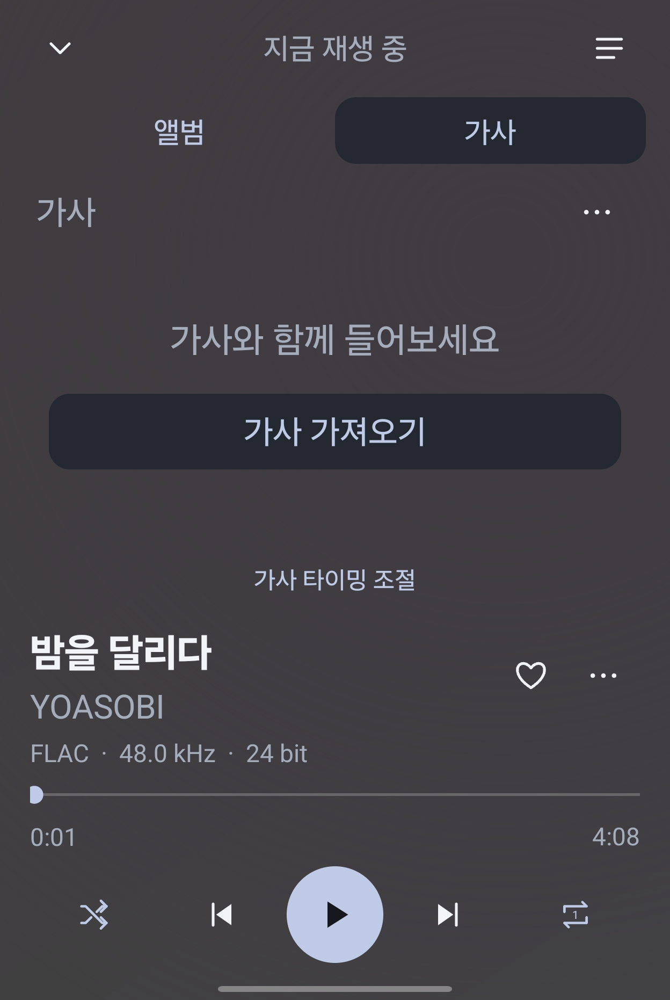
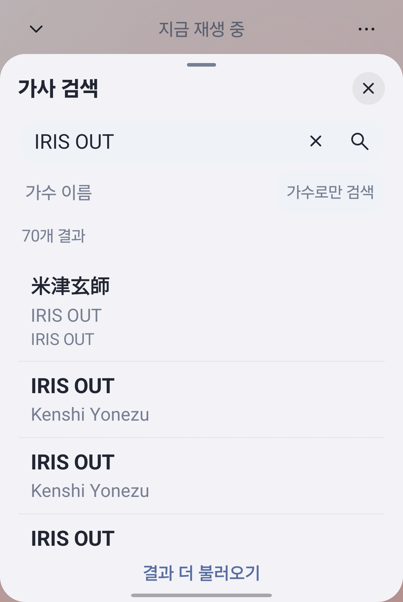
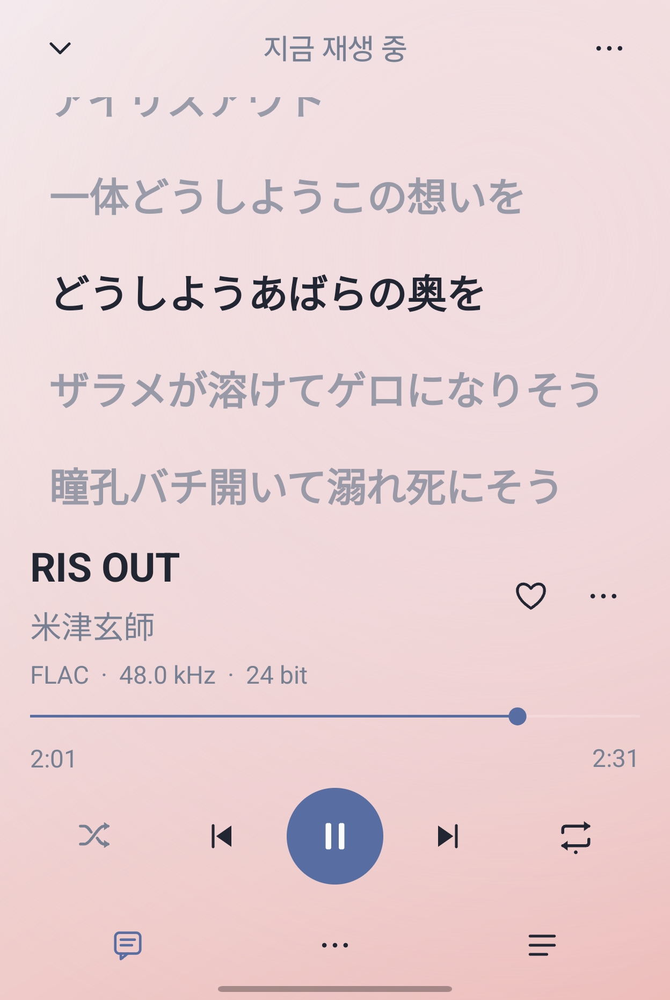
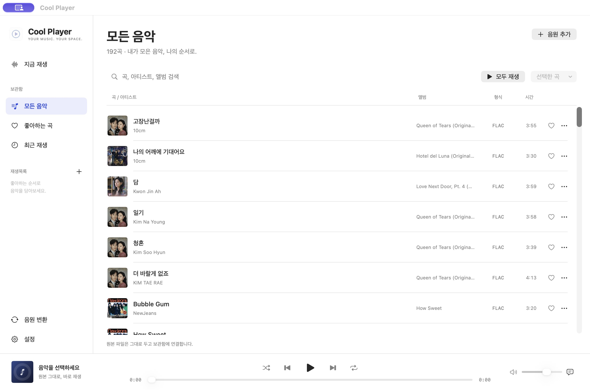
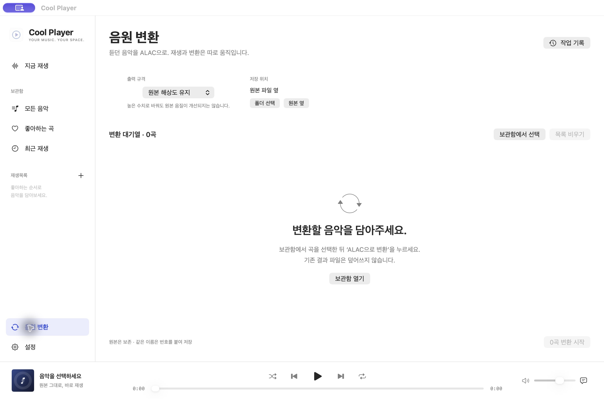

가사가 없다면,
가져오기부터.
재생 화면의 ‘가사 가져오기’를 누르세요.
ANDROID · 가사 가져오기
앱 안에서 찾고 저장해 두면,
다음에 들을 때도 함께 볼 수 있습니다.



재생 화면의 ‘가사 가져오기’를 누르세요.
제목이나 가수를 입력하고 곡에 맞는 가사를 선택합니다.
시간 정보가 있는 가사는 재생에 맞춰 강조됩니다. 글자 크기와 타이밍도 조절할 수 있습니다.
SAMSUNG MUSIC & COOL PLAYER
삼성 Music에서 듣던 음원을
Cool Player에서도 재생하세요.
현재 부르는 부분을 따라 볼 수 있습니다.
시간 정보가 있는 가사에서 지원합니다.
동일 곡의 재생 화면을 비교했습니다. 삼성 Music의 가사 지원 여부는 파일과 버전에 따라 달라질 수 있습니다.
휴대폰 · 태블릿 · 폴더블
작은 화면에서는 앨범과 가사를 오가고,
넓은 화면에서는 함께 봅니다.

음원 변환
변환할 음원과 저장 위치를 선택하면
원본을 유지한 채 새 파일로 저장합니다.

COOL PLAYER
ANDROID · 1.4.15
Android 휴대폰과 태블릿에서 음악과 가사.
홈 화면에서는 위젯으로 간편하게.
Android 8.1 이상 · APK 직접 설치
APK를 내려받아 열고 Android 설치 안내를 따라 주세요. 기존 앱을 삭제하지 않고 업데이트하면 보관함과 설정이 유지됩니다.
앱의 설정 → 앱 업데이트에서 새 버전을 확인하고 설치할 수 있습니다. 자동 확인을 켜면 앱 실행 시 하루에 한 번 새 릴리스를 확인합니다. 다운로드와 설치는 직접 선택합니다. 1.4.1 사용자는 앱 안의 업데이트 확인을 이용하세요.
MAC · 2.1.0
실시간 가사와 음원 정보 편집.
ALAC 변환까지 Mac 한곳에서.
macOS 14 Sonoma 이상 · Apple Silicon(M1 이상)
ZIP 압축을 풀고 Cool Player.app을 응용 프로그램 폴더로 옮기세요.
음원 변환과 원본 태그 편집은 Mac 앱에서 지원합니다. Android의 출력 음질은 기기와 연결된 오디오 장치에 따라 달라집니다.